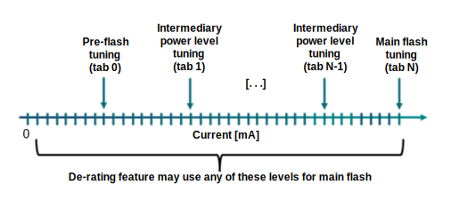
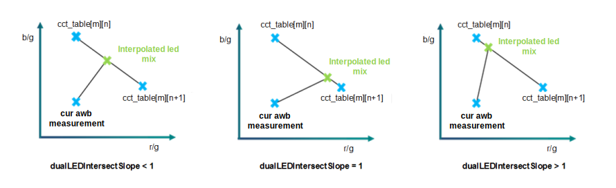

| AEC tuning concepts | |
In AECAlgoLEDModeAuto mode, the flash will go off only if the lux index of the scene drops and triggers the flash tuning parameter, flashLuxTrigger. This parameter is a trigger to avoid oscillating between flash and nonflash photos. If the lux index is larger than the trigger end, the flash is used. The using flash decision remains in effect unless the lux level dips below the trigger start.
During flash capture, the torch LED power (small LED current) first illuminates the scene to allow AEC and AF to calculate their settings for flash (large LED current). AEC relies on a parameter called flux to estimate the scene brightness under flash illumination. Flux is an estimate of the brightness ratio between torch and flash. Flux is tuned in the Parameter Editor.
The derating feature allows the driver to lower the maximum amount of power
allocated for flash. Therefore, it is preferable to tune flux for several intermediate
power settings between torch (minimum power) and full flash. Tuning is achieved by using
the LED tuning tool and should not be done manually.

Flash r/g and b/g color ratios help AWB determine the snapshot gray point. Tuning color ratios helps match the ambient illuminant (dual LED solutions) and determine the gray point in scenes that are in complete darkness (both single and dual LED solutions).
There are four main aspects involved in tuning flash LED settings:
With dual CCT LEDs, the AEC algorithm finds the mix of LEDs that produces the r/g and b/g flash illumination that best matches the current AWB r/g and b/g measurements of the scene.
The current exact AWB r/g and b/g combination will not be found in the flash LED table. Therefore, AEC must interpolate the closest LED mix based on the nearest tuning data points. The dualLEDIntersectSlope parameter allows interpolation decision tuning.
The Dual LED Intersect Slope parameter can be found in the Parameter Editor:
The tuned value must be larger than zero and smaller or equal to 5. The default slope value is 1.0.

When capturing a flash snapshot, AEC quantifies the luminous flash influence on the scene. Flash influence is computed at each frame during the preflash sequence by calculating the exposure ratio when flash is off over the exposure when low-power preflash is on.
Flash influence = exposure_sensitivity_off / exposure_sensitivity_preflash
For main flash, AEC provides a flash influence estimate. AEC computes the main flash exposure sensitivity with:
Flash influence = sensitivity_off / sensitivity_main_flash
AWB also uses the influence ratio (K2) without normalization. The K2 range is now [1.0, 100.0].
A K2 value of 100 indicates significant flash influence (e.g., a dark scene), whereas a K2 value of 1.0 indicates the flash has very little influence (e.g., a bright scene).